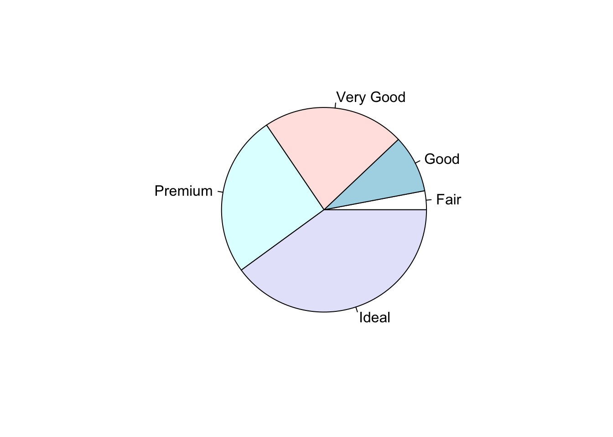
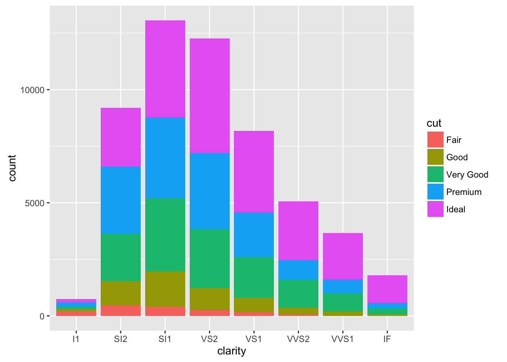
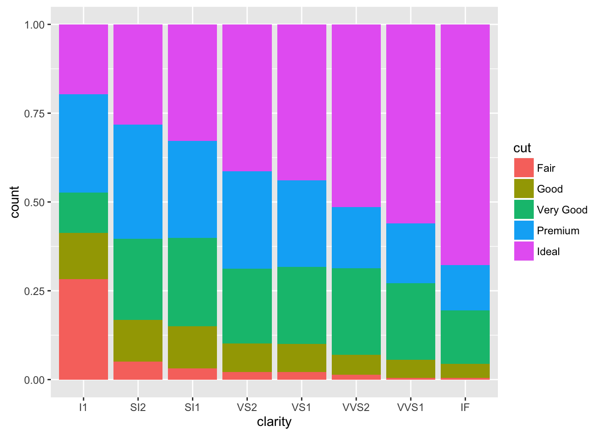
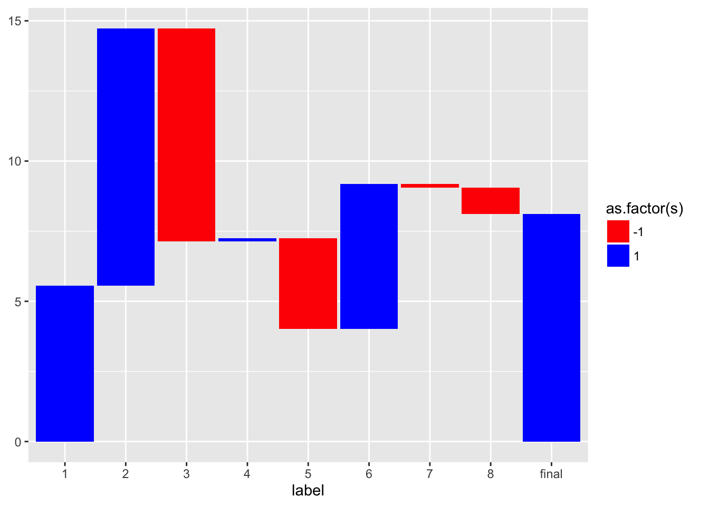

Créer un camembert pour visualiser la proportion.
library(ggplot2)
pie(table(diamonds$cut))
ggplot(diamonds, aes(clarity, fill=cut)) + geom_bar()

Pour intégrer à la fois la proportion et le volume, on peut calibrer les largeurs des barres en fonction des volumes.
Le waterfall chart est très couramment utilisé pour montrer l’évolution d’une série de montants.
set.seed(12)
data=data.frame(label=seq(1,8,1),
x=rnorm(8,10,3))
data## label x
## 1 1 5.558297
## 2 2 14.731508
## 3 3 7.129767
## 4 4 7.239984
## 5 5 4.007074
## 6 6 9.183112
## 7 7 9.053954
## 8 8 8.115234df=data.frame(montant=c(data$x[1],diff(data$x),data$x[nrow(data)]))
df$s=sign(df$montant)
df$end=cumsum(df$montant)
df$end[nrow(df)]=0
df$start=c(0,df$end[-nrow(df)])
df$label=c(data$label,"final")
df$id=seq_along(df$montant)
ggplot(df, aes(label, fill = as.factor(s))) +
geom_rect(aes(x = label, xmin = id - 0.475, xmax = id + 0.475, ymin = end, ymax = start)) +
scale_fill_manual(values = c("red","blue"))
Utiliser le package suivant pour réaliser un sunburst sur la série de données diamonds.
devtools::install_github("timelyportfolio/sunburstR")library(sunburstR)
library(data.table)
d1=data.table(cut=gsub("-","_",as.character(diamonds$cut)),
clarity=gsub("-","_",as.character(diamonds$clarity)),
color=gsub("-","_",as.character(diamonds$color)),f=1)
d1$label=paste(d1$cut,d1$clarity,d1$color,sep="-")
agg=aggregate(f~label,data=d1,sum)
sb=sunburst(agg,legend = list(w=200,h=20))
sbVous pouvez changer l’ordre des variables, par exemple, vous pouvez afficher d’abord les couleurs, ensuite les clartés, etc.
Il est également possible de réaliser un treemap sur les caractéristiques des diamants.
Copyright © 2016 DatavISUP